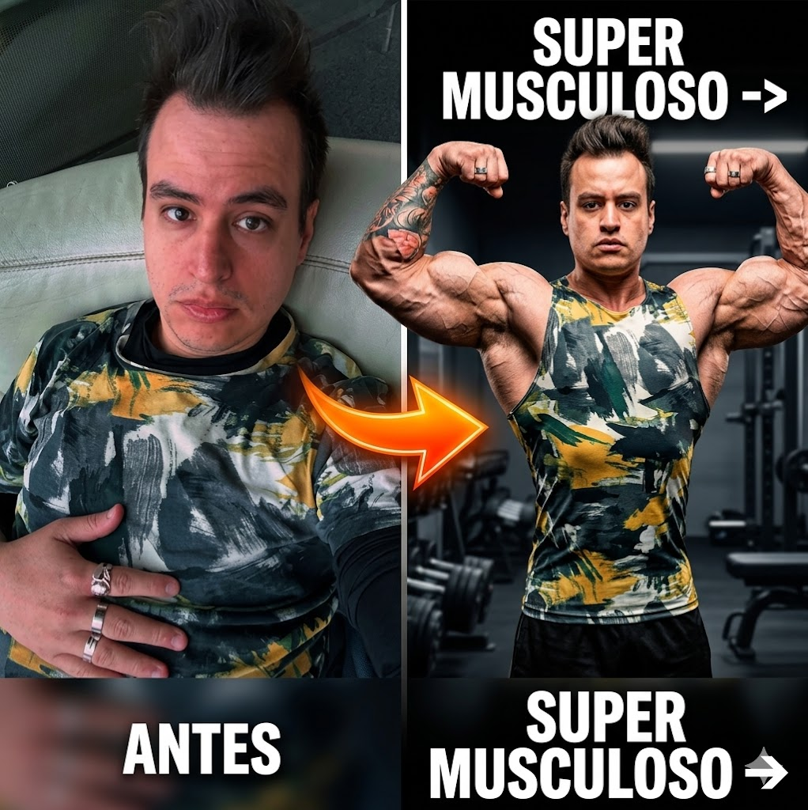

1. Cardio Suave (5 Min)
Cinta, bici o elíptica. El objetivo es elevar la temperatura articular y bombear sangre a los músculos sin generar fatiga central.
Es normal terminar con unas pequeñas gotitas en la frente. Ese es el punto ideal.

Tu plan de entrenamiento paso a paso
Alterná el Día 1 y el Día 2 cada vez que vayas, intentando dejar un día de descanso en el medio. Lo genial de este sistema es que se adapta a tu semana: si podés ir 2, 3 o 4 días, simplemente hacé la rutina que sigue en la lista.
Cinta, bici o elíptica. El objetivo es elevar la temperatura articular y bombear sangre a los músculos sin generar fatiga central.
Es normal terminar con unas pequeñas gotitas en la frente. Ese es el punto ideal.
Lubricación articular en colchoneta. Foco en extensión torácica (pecho) y rotación de cadera.
Si podés hacer más de 12 repeticiones sin esfuerzo, subí el peso en la próxima serie. Si no lográs llegar a 8 repeticiones con buena técnica, bajalo. La técnica siempre manda sobre el ego.
Estirá suavemente los músculos que trabajaste y que sientas más tensos hoy. No tiene que doler, es solo para soltar el cuerpo y relajar el sistema nervioso antes de irte.
Descanso activo
01:30